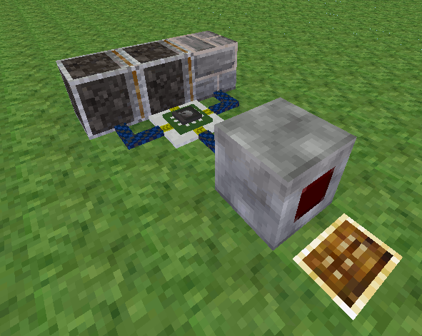

Mesecons Laboratory
Adventures in digital circuitry.
Welcome to the Mesecons Laboratory!
Here you'll find various articles on the Mesecons mod for Minetest.
The primary subject is the design and construction of larger or more advanced machines, a topic not very well covered elsewhere. For a simpler introduction to Mesecons, see the main site linked above.
This site has a Minetest forum topic too!
All articles assume basic knowlege of how Mesecons work, and some may also assume some proficiency in the Lua programming language.
Tic-Tac-Toe Machine16/3/13 - UberiA new spin on an old classic, including an investigation into various techniques for circuit optimization. Read on... |

|
The Double Sticky Piston Driver15/3/13 - UberiThe iconic symbol of piston madness, now available as a breakdown! Read on... |
 |